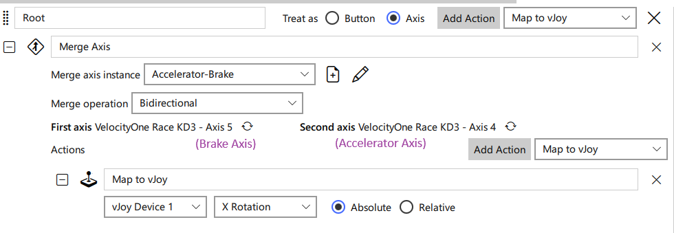

Common Compatibility Issues
This document describes input or force feedback compatibility issues seen with DirectInput (some gamepads, and most joysticks, HOTAS sets, and racing wheels) devices and games.
Controllers with "rumble" or "vibration" as opposed to force feedback are usually Xinput devices and not DirectInput. This document does not apply to them.
Game Loop Blocked By Force Feedback Commands
The typical way this issue manifests is, loss of frame rate only when using FFB devices (wheels or joystick). Another possible way this could manifest is, laggy force feedback, but there are no reports of this yet. This happens because the game loop is slowed down or thrown out of sync by DirectInput FFB commands blocking for longer than the application expects.
When the game is not in focus, this issue will go away, but this might be difficult to observe unless you're using windowed or borderless mode in the game. MSI Afterburner's FPS-vs-time graph can also be used to catch this behavior.
Fixes
- It is possible for such delays to come from USB hubs - try connecting the device directly to a USB port on the motherboard. Try different ports as well. USB 2 vs 3 shouldn't matter much, but worth trying anyway.
- It is possible for such delays to happen because of a slow/throttling CPU. Try closing non-essential applications. Also check that your CPU is performing as expected.
- Sometimes this is unavoidable with the physical device you are using; you will need to use FFFSake.
Zeroed Pedals
Technically speaking, analog axes have a resting position and an associated value that the application sees. For "legacy controllers", analog axes would give a value of 0 in their resting position - a zeroed axis. Contemporary devices have largely ditched this convention for axes that are resting at an end of their travel range rather than the center. Instead they typically give a large positive or negative reading, which can throw off games not expecting this.
Practically speaking, for modern:
- Wheels:
- The wheel axis is zeroed
- The pedals are not zeroed
- Analog pedals are not zeroed
- Flight controllers:
- Joystick axes are zeroed
- Throttles are zeroed, but usually unsprung so this doesn't really apply.
- Yaw pedals are zeroed
- Toe brake pedals are (probably, need to confirm) not zeroed
If you use such a device with a game that expects zeroed axes, then in the game control binding menu, you'll see one or more of:
- Some random axis (quickly) gets bound when you try to rebind a control
- Some games use the wheel and pedal controls to navigate menus. You might find the menus navigating themselves.
If you manage to bind controls and then play the game, you'll probably see the following in game:
- Accelerator and brake are ineffective or applied together (usually causing unintended burnout and donuts).
- Camera may be pointing the wrong way (left or right or behind).
Fixes
This issue is usually only seen with wheel pedals and analog paddles (not shifter paddles, those are technically buttons).
- The hardware manufacturer device control panel or app may an option to "combine pedals", try that.
- That option may not be available, or worse than having separate zeroed pedals (some games require zeroed pedals but allow separate pedals to be bound and used to e.g. do a burnout). In this case use Joystick Gremlin to zero the pedals.
Unfortunately, some devices have axes that may be disconnected in your setup (e.g. a clutch axis, but you didn't buy the clutch), and this axis could interfere with your game (e.g. immediately get bound to a control, or continuous scrolling in menus). In this case the only option is to use HidHide to hide the real device, and only map the axes you need to vJoy using something like Joystick Gremlin.
Combined Pedals
In addition to pedals being zeroed (see above section), they sometimes also need to be combined. Usually this presents as: the game only lets you bind a single axis for both accelerator and brake. You will also typically run into this issue if you try to use modern racing pedals for yaw control in a flight game.
Fixes
Same as for zeroed pedals, except if using Joystick Gremlin, use
"combined pedals" from the Actions menu. In R14 Gremlin it should like this
(combines brake axis 5 with accelerator axis 4 and outputs to vJoy axis
X rotation):

Hardware Effects Usage
HID PID devices are supposed to implement a number of hardware effects, which games can use via the DirectInput API. The simplest of these is the Constant effect, which can be used to emulate all other effects. Game developers with advanced physics tend to go this way, especially more recent games that expect more powerful CPUs. Games with simpler physics engines, or games designed for older CPUs instead prefer to use hardware effects.
A number of compatibility issues arise from usage of hardware effects because:
- Of bugs in DirectInput, which is a deprecated API not seeing further bug fixes.
- Incorrect usage of the DirectInput APIs by games, game engines, or input libraries wrapping DirectInput (Logitech's SDK, SDL, ...?).
- Incorrect interpretation of the complex PID protocol by hardware makers.
- With contemporary games mostly moving to using the
Constanteffect only (and sometimesDamper), hardware makers have unfortunately started neglecting the other built-in effects, implementing them partially or incorrectly.
Of the above, 1 and 2 are addressed in the next section, while 3 and 4 belong to this section. They can be difficult for the typical gamer to discover, but some signs are:
- Seemingly nonsensical force feedback effects mismatched with in-game events.
- Extremely weak effects
- Missing effects
Again, for most of these, a typical gamer wouldn't know what to expect and therefore wouldn't know if something is wrong.
Fixes
Try using the Reducer engine from FFFSake and play the game for a bit. Compare
your experience with the forwarder engine. If the former is giving a better
experience, you are running into this issue! Please report the game and wheel/joystick via
GitHub Discussions!
Things to look out for (in driving games; I only have a FFB wheel), even in more "arcady" games:
- Driving over rough terrain should cause rumble.
- Crashing into objects should cause a sharp kick.
- Steering resistance should apply, usually stronger at higher speeds and may or
may not be abset when stopped.
- It should always be counter to the direction you're steering, and it should apply in both directions.
- Drifting should be felt, usually as a loss/reduction in steering resistance.
If the forwarder engine is giving a better experience, this is unexpected unless
your CPU is quite slow/starved/throttled. Please report these as well.
Game Crash with Force Feedback Enabled
Some games crash if a force feedback device is plugged in, or if force feedback is enabled on the device.
Fixes
Use FFFSake, either Forwarder or Reducer engine.
Requires Wheel
Some games require the game controller to be detected as a "wheel" by DirectInput to enable full features (like setting axis curves in-game), and in some cases to use the device correctly (e.g. to use the "wheel" force feedback effects).
Fixes
vJoy as "Wheel"
The recommended fix is to use vJoy, configured to detect as a wheel; see the fffsake setup docs.
IndirectInput
This could be implemented, but isn't currently planned, as it won't work with games that block DLL replacement mods.
Registry Modifications
It is possible to change the device type via registry modifications and via certain Windows APIs, but I haven't pursued this.
Other DirectInput (Usage) Bugs
Sometimes games do not use DirectInput correctly, or there are quirks in the device drivers, leading to obscure bugs. These are relatively rare, and tend to be game or developer specific. Some examples are:
- Loss of some or all effects in games that do have FFB
- Can be fixed using
FFFSake.
- Can be fixed using
- Game effects feeling wrong (vague, I know).
- Might be fixed using
FFFSake.
- Might be fixed using
- Certain features disabled in the game for your controller e.g. FFB settings
(Dirt Rally, Crew 2), H-shifter (Dirt 3, Dirt Rally) but known to be supported
for others.
- Some issues can be fixed via
vJoy- see Requires Wheel. - For others
IndirectInputwill likely be required.
- Some issues can be fixed via
FFB Saturation
Force feedback saturation can occur when multiple force feedback effects are active simultaneously, and their combined strength exceeds the maximum force the hardware can produce. This might be an intentional choice by the game in some cases.
With saturation, there will be a partial loss of feedback detail. For example, when steering over rough ground, the steering strength might significantly mask the terrain effects.
Fixes
To mitigate saturation, you can adjust the gain of individual hardware effects in FFFSake.
By reducing the gain of specific effects, their contribution to the overall force is lessened,
thus reducing or eliminating saturation and restoring feedback detail.
The game guides may have recommended settings, which can be used as a starting point; per-device tweaking might be desired, depending on the maximum and sustained torque values for the device.
Weak Forces; Weak Spring/Steering Forces
Some games use hardware effects (see Hardware Effects Usage), and certain
effects might feel too weak (especially if the game was designed/tested for gear/belt devices and
you're using modern direct drive device). In these cases you could experiment with the hardware
effect gains in FFFSake to tune your experience.
Some driving games use the spring hardware effect for steering forces. If the force generally feels weak,
you'd use the hardware gains as outlined above. However if the steering forces are only weak when
the wheel is centered but feels quite strong near the edges, then you want to use the
Spring Coefficient, which scales the spring gain without affecting the limits (so, the limits will
be reached sooner as you turn the wheel).
Inverted Force Feedback
In some games, force feedback can apply in the wrong direction. The wheel/joystick will usually be hard to control in these cases. For wheels, you'll notice that steering resistance is actually in the opposite direction. The wheel/joystick might oscillate wildly.
Fixes
This could be fixed using FFFSake, but this is not currently implemented as I have
not seen a game that needs this. When I have heard of this happening, the developer is
on the hook for fixing it and usually follows through.